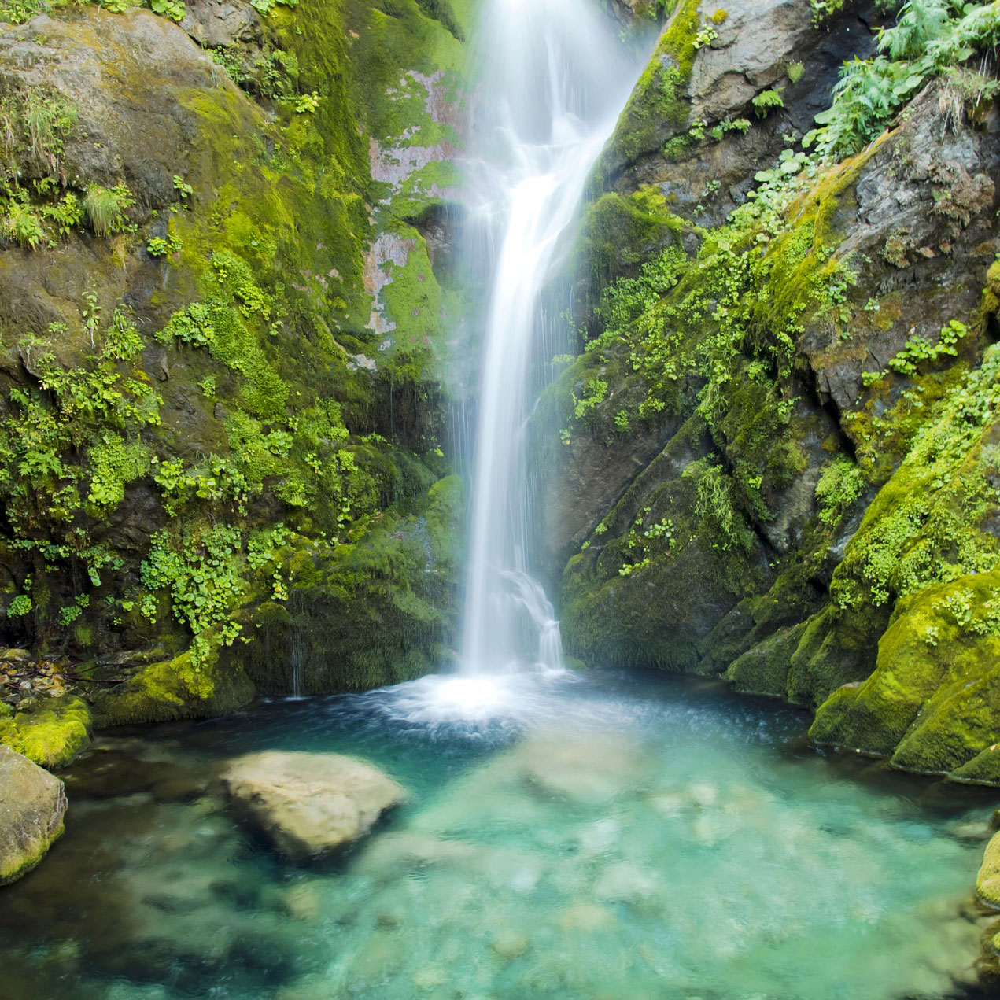
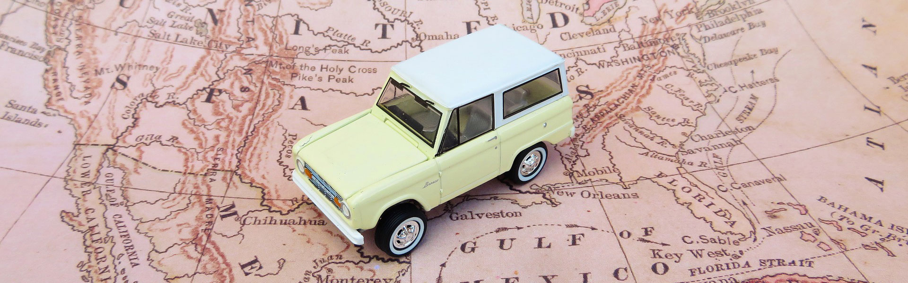

FIVE REASONS WHY HIKING IS A GREAT HOBBY
Spending some time outside hiking is one of the best hobbies you can have, as it improves both the mind and the body. Here are 5 of the best reasons why everyone could benefit from hiking on a regular basis.
1. It soothes the mind
Sometimes the daily grind can bring you down. Whether it’s work, family, or the general stress of everyday life, it all adds up. However, you can reduce that stress and become healthier just by hiking. There are numerous health benefits to be had from hiking, while the fresh air recharges the lungs, and spending time in nature lets you step back and enjoy the little things.
2. It’s easy and inexpensive
No gym membership, or prior experience needed; going on a hike is as simple as putting on a good pair of hiking socks, lacing up the shoes, and getting out there. Most places have hiking trails, and even if you live in the city, there are bound to be trails only a short drive away. All you have to do is get up and go.
3. You can lose yourself in nature
We’ve got tablets, cell phones, and computers to hold our attention when we’re home, but sometimes, you need to get away from all that technology and go back to basics. While hiking, there are no screens to look at, or anything else besides the trees and the animals that call that area home.
4. It’s great exercise
From Crossfit to P90X to Insanity, there’s no shortage of exercise programs designed to sculpt and tone your body. While each of these have their benefits, there’s a lot to be gained from something as simple as walking. It’s the most natural form of exercise, and you don’t need prior training to be good at it.
5. You get to spend quality time with loved ones
Hiking is a great way to spend a few hours with someone you’re close to. You’re forced to get together and talk, and people of all ages can do it. It’s a great way for families of different ages to spend some time together.
Hiking is great for the mind, the body and the soul, so why not give it a try? Grab your best hiking socks and shoes and go forth and explore, you may even have an adventure on the way!
